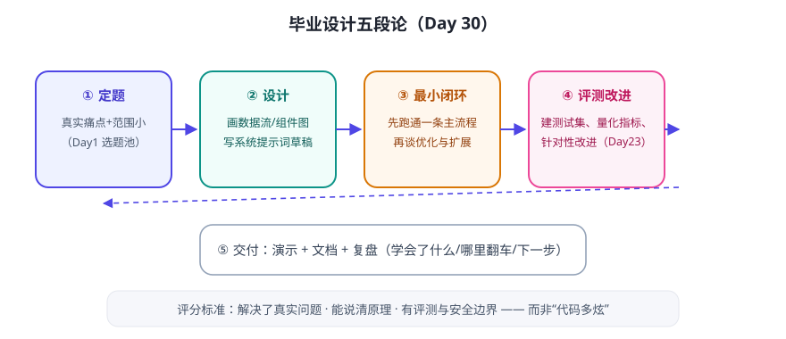

毕业设计不要求“大而全”，要求“真而闭环”：解决一个你真实的小问题，能说清原理，有评测与安全边界。回顾 Day 1 你记下的“选题池”——现在兑现它。
五段论

选题建议（从你的 Day 1 练习里挑）
- 选范围小的：“帮我整理会议记录”比“帮我管理整个项目”好。
- 选你能判断对错的：你清楚“做对了”长什么样，评测才好写。
- 选你真会天天用的：用得上才会持续打磨。
交付物清单
| 交付物 | 内容 |
|---|---|
| 可运行作品 | 代码 + 启动说明（README：怎么装、怎么跑、用什么 Key） |
| 系统提示词 | 独立成文件，含身份/边界/输出契约 |
| 测试集与结果 | 20+ 条测试问题、成功率、典型失败案例 |
| 安全说明 | 权限边界、人工确认点、数据与隐私处理 |
| 复盘文档 | 学会了什么、哪里翻车、下一步想做什么 |
30 天回顾：你走过的路
- W1 入门：AI/LLM 概念、Agent 四要素与循环、提示词、工具、记忆、迷你 Agent。
- W2 变聪明：提示词进阶、上下文工程、工具实战、RAG、Embedding、规划、笔记问答。
- W3 工程化：框架、组装、编排、多 Agent、持久化、信息收集流水线。
- W4 上生产：安全、评测、成本、多模态、办公自动化、部署、伦理、毕业设计。
💡 结课不是结束：技术半年一变，但这 30 天建立的概念地图、工程方法、安全与评测意识不会过期。保持“每天进步一点”的习惯，你已经比 30 天前强太多了。
🎓 毕业任务
- 按五段论完成你的作品（允许用 1–3 天慢慢做）。
- 写一页纸的 README + 录一个 3 分钟演示（手机录屏即可）。
- 把作品发给一个人用，收集真实反馈，改一版。
- 回到 Day 1 看看你当时的选题，告诉自己：你做到了。
📌 结课小结
作品标准解决真实问题 · 能讲清原理 · 有评测与安全边界
五段论定题 → 设计 → 最小闭环 → 评测改进 → 交付复盘
最宝贵的资产概念地图 + 工程方法 + 安全/评测意识
下一站想继续？可以：深入框架源码 / 多模态 / 微调 / 把它做成产品
🎉 恭喜完成 AI Agent 30 天课程！需要我把这套课程也整理成 Markdown 版、或继续做进阶专题，随时告诉我。